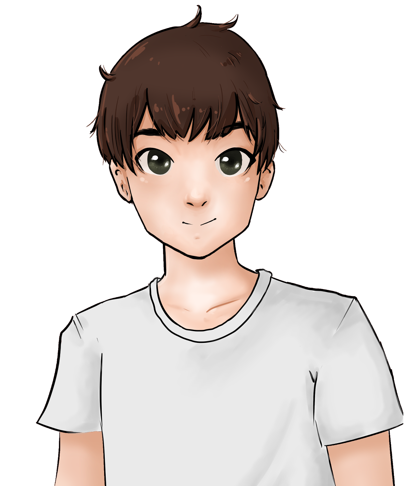
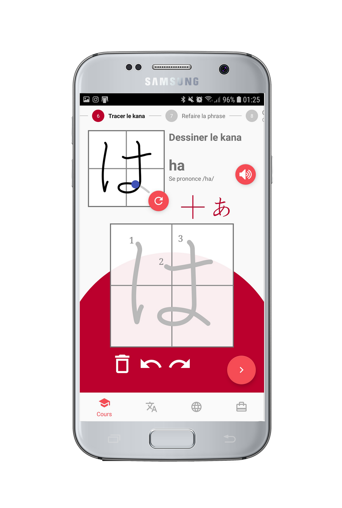
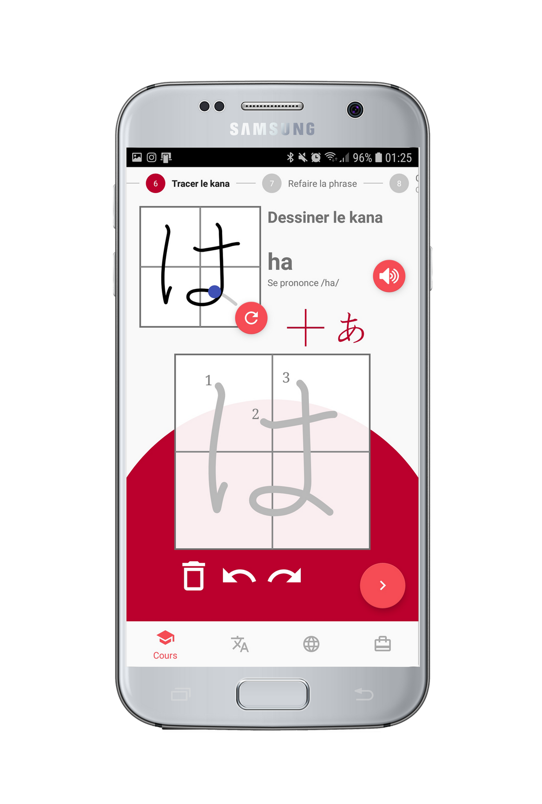

Page précédente
Ayumi
Ayumi est une application d'apprentidssage du japonais. L'utilisateur incarne Adrien, un jeune français en échange scolaire au Japon. Il est accueilli par Ayumi, une jeune japonaise, ainsi que la famille de cette dernière. Adrien va évoluer dans différents chapitres consacrés à des thèmes différents (la nourriture, la maison, se présenter,...)On retrouve dans cette applications divers exercices d'écriture, des dialogues, des quizz, des exercices de construction de phrases, des pages de vocabulaire 2D et 3D ainsi que des points culturels racontant des anecdotes sur la vie au Japon.
Voici le personnage d'Ayumi en version chibi (une version ressemblant à un enfant ou un personnage de petite taille). Cette version d'Ayumi intervient pendant les exercices, pour encourager l'utilisateur.
Voici le personnage d'Ayumi telle qu'elle est représentée pendant les dialogues.
Ceci est le personnage d'Adrien, que l'utilisateur incarne.
 

Le premier écran montre l'exercice pour apprendre à tracer les kanas (symboles japonais). L'exemple en haut à gauche est animé en boucle pour que l'utilisateur voit l'ordre des traits. On peut choisir de laisser la grille ou de l'enlever, ainsi que de garder ou non le modèle en transparence sur la zone de tracé.
Le second écran montre le dialogue. Ici, c'est la scène d'arriver d'Adrien à l'aéroport au Japon, accueilli par Ayumi et sa famille (dont sa mère à l'écran).
L'écran de gauche est la page de grammaire. Elle présente des cours, des exemples que l'utilisateur peut écouter à sa guise. Grâce à cette page, ce dernier peut étudier les notions dont il aura besoin tout au long du chapitre.
L'écran de gauche montre un exercice de construction de phrase, avec des mots à remettre dans l'ordre pour traduire des phrases, en se basant sur ce qui a été entendu lors du dialogue ou vu sur l'écran de grammaire
Le premier écran est une page de quizz. Cet exercice teste les notions vues dans le chapitre, comme du vocabulaire ou de la grammaire.
Le deuxième écran est l'écran de vocabulaire 2D. Au fur et à mesure de l'avancée de l'utilisateur dans les chapitres, cette liste de vocabulaire s'allonge et peut être consultée à tout moment, même pendant un exercice si besoin, sans perte de progression.
J'ai aussi eu pour mission de créer le logo de l'application. Pour cela j'ai fait beaucoup d'essais, utilisant le personnage chibi d'Ayumi, sa version normale ou des lettres japonaises. Il me fallait aussi créer le logo de l'écran titre. J'ai cherché pendant longtemps des typographies d'inspiraition japonaise, avec des effets d'écriture au pinceau ou des typographies évoquant l'Asie et les caractères japonais. N'étant pas convaincue par mes recherches, j'ai décidé de créer moi-même une typographie adaptée que je pourrais utiliser, en m'inspirant d'un élément de la culture japonaise.
J'ai donc conçu ceci :
Cependant, cette typographie est un peu lourde lorsque le mot est écrit en entier. Aussi j'ai préféré choisir une typographie déjà existante pour l'écran titre mais j'ai gardé la lettre "A" pour le logo de l'application.
Voici les logos finaux :
Voici la charte graphique que j'ai établie :
Dans l'optique d'organiser une séance test utilisateur avec des élèves de l'école, nous avons étudié l'idée de créer des goodies que nous pourrions distribuer pour attirer les élèves. À cause des conditions sanitaires difficiles de 2020, cette séance n'a jamais eu lieu mais nous avions préparé des mockups, que voici :
Et voilà pour le projet Ayumi !
Est-ce que cela vous a plu ?
created with
HTML Website Builder .